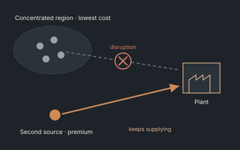
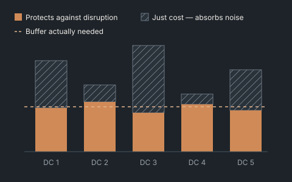
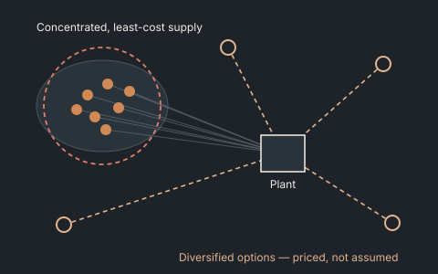
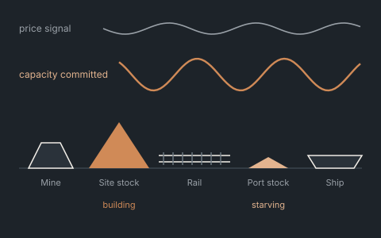
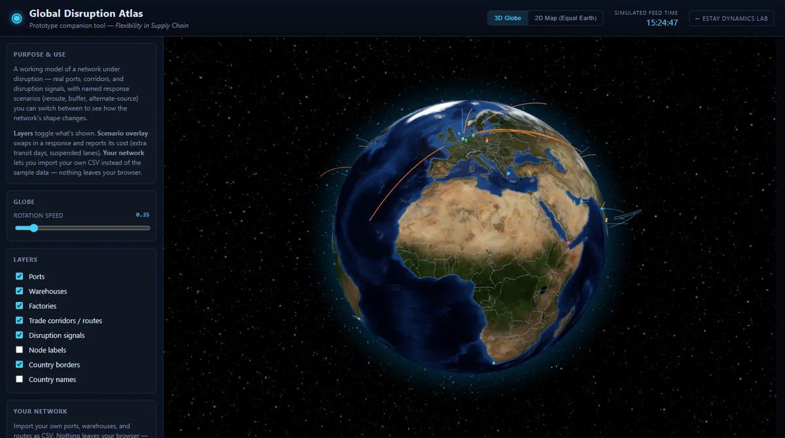

Network Design Optimization · MILP / stochastic programming
Network decisions with the resilience priced in.
Facility, sourcing and capacity decisions usually get optimized on landed cost alone. We put a number on flexibility — deferral, expansion, dual sourcing, switching — so the trade-off against cost is explicit.

The CPO asks“Is dual-sourcing worth the premium?”

The CFO asks“Which footprint option is cheapest once disruption risk is counted?”
- Problem
- Facility, sourcing, and capacity decisions typically get optimized on landed cost alone. Resilience and flexibility show up afterward, as a qualitative overlay, which means they lose every time to a cheaper number.
- Approach
- Mixed-integer and stochastic optimization models that put a number on flexibility — deferral, expansion, dual-sourcing, switching — alongside cost, so the trade-off is explicit rather than assumed.
- Output
- Candidate network configurations with quantified cost-resilience trade-offs, sized for the capital allocation conversation you actually need to have.
- Fits when
- You're facing a re-sourcing, capacity expansion, or footprint decision and want the resilience value of each option priced, not asserted.
Where this has been applied

Independent researchIllustrative
Pricing geographic concentration risk into the sourcing decision.
Modest diversification premiums were, in expectation, cheaper than the risk they replaced.
Read the case →
MiningIllustrative
Changing the buffer structure so a wrong price forecast costs less.
Capacity decisions tied to short-term price signals were set up to over-commit before a downturn.
Read the case →
Lab · live modelGlobal Disruption Atlas
See how a network reroutes when a corridor closes.
Open the model →Next step